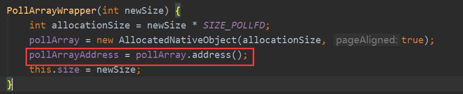

Select函数
一、Linux里的select函数
介绍
可以在Linux中用命令man select查看这个函数：
x1/* According to POSIX.1-2001 */2#include <sys/select.h>3
4/* According to earlier standards */5#include <sys/time.h>6#include <sys/types.h>7#include <unistd.h>8
9int select(int nfds, fd_set *readfds, fd_set *writefds,10 fd_set *exceptfds, struct timeval *timeout);11
12void FD_CLR(int fd, fd_set *set);13int FD_ISSET(int fd, fd_set *set);14void FD_SET(int fd, fd_set *set);15void FD_ZERO(fd_set *set); 先来分析这个函数，这个是C写的，需要一点点指针的概念，理解成JAVA中的对象引用地址就行了。我们先来看看函数的一些描述：
说的就是允许一个程序去监视多个文件描述符，直到一个或者多个文件描述符为IO操作准备好了，也就是说有读写事件，准备好了也就意味着可以进行IO操作，不阻塞了。这个就说明select是阻塞的。他会去监听三个文件描述符集合里是否有改变的，如果有，就说明有事件，三个集合分别是读readfds，写writefds，异常exceptfds。而且还提供了4个宏定义来对集合操作。
我们先来看看他的几个参数吧：
nfds就是这三个集合里面文件描述符最大的那个+1。文件描述符是什么? 看2步。
比如说readfds里面的描述符是3,4,5，writefds里是3,5,6，exceptfds是2,7，则最大的就是7，nfds=8。
timeout就是一个超时设置的结构体，这个就不多说了。说下4个宏定义：
fd就是文件描述符，是个int整数。fd_set是个位图类型，每个描述符都可以对应一位，设置为0或者1，类似哈希定址的方法，总能找到对应数组的索引，就能设置相应元素的值了。如果不理解，就当是个不重复的集合。位图是什么可以看这篇文章。
void FD_CLR(int fd, fd_set *set)这个函数就是将fd从集合中清除，也就是位置值为0。
int FD_ISSET(int fd, fd_set *set)这个函数就是判断fd是不是在集合里，也就是判断位置的值为0还是1。
void FD_SET(int fd, fd_set *set)这个函数就是将fd设置到集合里，也就是位置值为1。
void FD_ZERO( fd_set *set)这个函数就是将整个集合都清了，全是0。 返回值是三个集合里面文件描述符事件的数量总和，这个后面我会举例子说明。 这里要注意，这三个集合是是传入传出集合，简单就是说，你设置了集合表示你要监听的文件描述符的值，等调用select传入集合后，集合里的值会随着监听事件而改变，有事件的文件描述符对应值为1，没有事件的为0。
文件描述符
Linux 下，一切皆文件。
在Linux操作系统中，可以将一切都看作是文件，包括普通文件，目录文件，字符设备文件（如键盘，鼠标...），块设备文件（如硬盘，光驱...），套接字等等，所有一切均抽象成文件，提供了统一的接口，方便应用程序调用。
既然在Linux操作系统中，将一切都抽象为了文件，那么对于一个打开的文件，我应用程序怎么对应上呢？
文件描述符：简称fd，当应用程序请求内核打开/新建一个文件时，内核会返回一个文件描述符用于对应这个打开/新建的文件，其fd本质上就是一个非负整数，读写文件也是需要使用这个文件描述符来指定待读写的文件的。
内核：操作系统的核心叫内核，是一个独立的软件，操作系统为每一个进程维护了一个文件描述符表，该表的索引值都从0开始的，所以在不同的进程中可以看到相同的文件描述符，这种情况下相同的文件描述符可能指向同一个文件，也可能指向不同的文件，具体情况需要具体分析，下面用一张简图就可以很容易的明白了。
通过上图可以看到，当不同进程中出现相同的文件描述符时，可能实际对应的文件并不是同一个，相反不同进程中不同的文件描述符也可能对应同一个文件。
当一个应用程序刚刚启动的时候，0是标准输入，1是标准输出，2是标准错误。如果此时去打开一个新的文件，它的文件描述符会是3。POSIX标准要求每次打开文件时（含socket）必须使用当前进程中最小可用的文件描述符号。
文件描述符限制：文件描述符是一个重要的系统资源，理论上系统内存多大就应该可以打开多少个文件描述符，但是实际情况是，内核会有系统级限制，以及用户级限制（不让某一个应用程序进程消耗掉所有的文件资源，可以使用ulimit -n 查看）。
文件描述符唯一性：进程 + 文件描述符ID确认，因为内核为每个进程都有一份其所属的文件描述符表。
对应关系：应用程序进程拿到的文件描述符ID == 进程文件描述符表的索引，通过索引拿到文件指针，指向系统级文件描述符表的文件偏移量，再通过文件偏移量找到inode指针，最终对应到真实的文件。
Socket：套接字也是文件，当server端监听到有连接时，应用程序会请求内核创建Socket，Socket创建好后会返回一个文件描述符给应用程序，当有数据包过来网卡时，内核会通过数据包的源端口，源ip，目的端口等在内核维护的一个ipcb双向链表中找到对应的Socket，并将数据包赋值到该Socket的缓冲区，应用程序请求读取Socket中的数据时，内核就会将数据拷贝到应用程序的内存空间，从而完成读取Socket数据。
这里提一下，操作系统针对不同的传输方式（TCP，UDP）会在内核中各自维护一个Socket双向链表，当数据包到达网卡时，会根据数据包的源端口，源ip，目的端口从对应的链表中找到其对应的Socket，并会将数据拷贝到Socket的缓冲区，等待应用程序读取。
最后附上Linux中进程结构图：

例子讲解
我们直接看linux给出的例子，看主要这些参数怎么用的：
341
7int8main(void)9{10 fd_set rfds;//定义一个读集合11 struct timeval tv;//定义超时结构体12 int retval;//返回值13
14 /* 监听标准输入*/15 FD_ZERO(&rfds);//将集合清016 FD_SET(0, &rfds);//将描述符0添加能进去17
18 /* 设置超时 */19 tv.tv_sec = 5;20 tv.tv_usec = 0;21/* 开始监听，写事件和异常不监听 */22 retval = select(1, &rfds, NULL, NULL, &tv);23 /* Don't rely on the value of tv now! */24
25 if (retval == -1)//异常26 perror("select()");27 else if (retval)//有事件28 printf("Data is available now.\n");29 /*FD_ISSET(0, &rfds)肯定是返回1*/ 30 else //0的话就没有事件发生31 printf("No data within five seconds.\n");32
33 exit(EXIT_SUCCESS);34} 就是说我要监听0号文件描述符的读事件，如果有读事件返回那肯定是1，因为我只监听了读集合，而且里面就只有0号文件描述符。
其实更加通用的应该是三个集合，比如现在有三个socket，其实socket就是个数据缓冲区，会生成三个文件描述符，fd1,fd2,fd3，添加之后对应的值是3,4,5因为0,1,2被系统的标准输入输出异常给用了，每个进程都有对应的文件描述符表，就当是一种个文件之间的联系，可以通过这个关系来操作socket。默认集合里都是0的：
如果现在的想监听fd1,fd2的读，fd2的写,fd3的异常的话应该是这样子了：
其实就是文件描述符的值对应监听集合的长度取模后的对应的位置上设置为1。
然后应该调用retval = select(6, &readfds, &writefds, &exceptfds, &tv);。第一个参数是三个集合里最大文件描述符的值+1，最大文件描述符所以是6。 这里要注意的是，如果有事件，那会把对应集合的对应文件描述符的位置值设置为1，没有事件的设置为0。
如果retval 不为0和-1。说明有事件，但是具体是什么不知道，所以只能一个个集合遍历。比如说返回为2，但是有三个集合，你不知道哪一个集合里面的哪些文件描述符的值是设置成1了，反正只有两个，所以你得遍历三个啊，这个比较麻烦了。
但是也可以用自定义的数组先把你要监听的文件描述符锁对应集合里的位置保存了，有了返回值之后直接就取那些位置判断是否是该文件描述符的事件。比如我保存了fd1,fd2的读集合的位置，fd2的写集合的位置，fd3的异常集合的位置。然后返回是2，那我直接就拿这5个位置，一一去三个集合里比对，看哪两个的值是1就可以了，比如最后发现是fd1的读事件和fd2的写事件,那我后面就可以直接用系统提供的read/write去操作了。这个确实不方便，但是后面的poll和epoll就进步一的对这个做了升级。另外打开的文件描述符表在这里也是有限制的1024个，要改只能编译内核了。
Linux里的poll函数
poll在select基础上升级了一版，把前面我们所做的自定义监听事件数组的事给做了，同时他可以修改文件描述符的数量上限了，我们来看看他的函数：
61int poll(struct pollfd *fds, nfds_t nfds, int timeout);2struct pollfd {3 int fd; /* 文件描述符 */4 short events; /* 监听事件*/5 short revents; /* 监听返回事件 */6} 看到他的参数少了不少，其实就是把前面三个集合换成一个数组，fds就是首地址，里面每个元素都可以自己添加，要监听什么就设置什么，这样就不像以前那样需要整一个集合传进去，现在只要把你要监听的元素放进去即可。监听事件events常用的是:POLLIN,POLLOUT,POLLERR。对应的监听返回事件revents也是这三个。
如果还是上面的例子，应该这样写：
161struct pollfd pfds[4];2pfds[0].fd=fd1;3pfds[0].events=POLLIN;//读事件4
5pfds[1].fd=fd2;6pfds[1].events=POLLIN;//读事件7
8pfds[2].fd=fd2;9pfds[2].events=POLLOUT;//写事件10
11pfds[3].fd=fd3;12pfds[3].events=POLLERR;//异常事件13
14
15retval = poll(pfds, 6,-1);16//遍历pfds，取出元素的revents，判断并处理。 相比较select，确实方便了不少，但是还是需要去遍历判断，能不能直接就告诉我哪些有事件，直接处理好了，那就要看epoll了。
Linux里的epoll函数
这个主要是分成三个函数了，epoll_create，epoll_ctl，epoll_wait这三个。
epoll_create
11int epoll_create(int size);//建议监听多少个文件描述符，创建红黑树用返回的是一个文件描述符，指向的是一颗红黑树的树根。红黑树是什么，可以百度下，搜索性能比较高，二分查找的思想。
epoll_ctl
201/** epfd就是上面的epoll_create创建的文件描述符2op是对这个epfd的操作，比如有EPOLL_CTL_ADD增加，EPOLL_CTL_MOD修改，EPOLL_CTL_DEL删除，其实就是对应 树结点的增加，修改，删除。3fd就是被操作的对象4event就是事件信息5*/6int epoll_ctl(int epfd, int op, int fd, struct epoll_event *event);7//返回0表示成功8
9
10typedef union epoll_data {11 void *ptr;//任意类型的指针，可以是回调函数12 int fd;//文件描述符13 uint32_t u32;//32位无符号整数14 uint64_t u64;//64位无符号整数15} epoll_data_t;16
17struct epoll_event {18 uint32_t events; //监听事件常用的是EPOLLIN，EPOLLOUT，EPOLLERR19 epoll_data_t data; //监听到的数据20};这个函数就是对某个红黑树进行操作，增加，修改，删除某个结点的事件。
epoll_wait
91/**2epfd就是上面的epoll_create创建的文件描述符3events是事件数组的首地址，4maxevents是事件数组的大小5timeout超时6*/7int epoll_wait(int epfd, struct epoll_event *events,8 int maxevents, int timeout);9//返回监听到事件的个数 要注意events是个传出参数，就是说运行完epoll_wait后，结果就会在events里，这就太方便了，不用像前面那样还去遍历，直接拿出来就好了。还是拿前面的例子，如果用这个来做就应该这样：
301int epfd=epoll_create(4)2struct epoll_event event_fd1;3//fd1读4event_fd1.events=EPOLLIN;5event_fd1.data.fd=fd1;6epoll_ctl(epfd,EPOLL_CTL_ADD,fd1,&event_fd1)7
8//fd2读9struct epoll_event event_fd2_r;10event_fd2_r.events=EPOLLIN;11event_fd2_r.data.fd=fd2;12epoll_ctl(epfd,EPOLL_CTL_ADD,fd2,&event_fd2_r)13
14//fd2写15struct epoll_event event_fd2_w;16event_fd2_w.events=EPOLLOUT;17event_fd2_w.data.fd=fd2;18epoll_ctl(epfd,EPOLL_CTL_ADD,fd2,&event_fd2_w)19
20//fd3异常21struct epoll_event event_fd3;22event_fd3.events=EPOLLERR;23event_fd3.data.fd=fd3;24epoll_ctl(epfd,EPOLL_CTL_ADD,fd3,&event_fd3)25
26struct epoll_event events[4];27int ret=epoll_wait(epfd,&events,4,-1)28for(i=0;i<ret;i++){29 //做处理30}我们可以看到，从
select到epoll，是一代代的进步，越来越方便了，而且性能相对也越来越高，不过如果说连接很多，监听也很多的情况下，其实性能都差不多，因为基本上都是要全部遍历，不过如果连接多，监听少的情况，epoll的性能就体现出来了。其实epoll还有边沿触发和水平出发的模式，边沿触发可以减少epoll_wait次数，再加上非阻塞IO的fcntl性能可以不错的。
二、windows下的非阻塞设置
在NIO里面，我们设置一般都会用非阻塞，也就是这样设置erverSocketChannel.configureBlocking(false);.,具体他做了什么呢，我们一起来看看，最终可以跟到一个JNI的本地方法：
11public static native void configureBlocking(FileDescriptor fd, boolean blocking) throws IOException; 我们可以在JDK的源码里找到IOUtil.c，里面的方法就根据传入的参数blocking设置了相应的值：
主要是这个函数ioctlsocket，具体可以看这篇文章。
windows下的select
最后跟进去是也是个JNI的本地方法，还不是真正的windows下的select：
91 private native int poll0(long pollAddress, int numfds,2 int[] readFds, int[] writeFds, int[] exceptFds, long timeout);3
4// pollAddress：表示文件描述符数组的首地址5// numfds：表示有多少个文件描述符要监听6// readFds：表示监听返回的读事件的文件描述符数组7// writeFds：表示监听返回的写事件的文件描述符数组8// exceptFds：表示监听返回的异常事件的文件描述符数组9// timeout：表示超时时间 这个方法跟我上一篇讲Linux的select差不多，也是把要监听的读写异常文件描述符数组传给操作系统调用，然后操作系统再去进行设置，最后返回有事件的个数，然后在从这些数组里面轮询判断到底是哪个文件描述符的哪个事件。底层调用的是WindowsSelectorImpl.c的Java_sun_nio_ch_WindowsSelectorImpl_00024SubSelector_poll0方法：
1561
3typedef struct {4 jint fd;//文件描述符5 jshort events;//监听事件6} pollfd;7
8
9typedef struct {10 u_int fd_count; // 多少个文件描述符11 SOCKET fd_array[FD_SETSIZE]; // 文件描述符数组12} FD_SET;13
14
15
16JNIEXPORT jint JNICALL17Java_sun_nio_ch_WindowsSelectorImpl_00024SubSelector_poll0(JNIEnv *env, jobject this,18 jlong pollAddress, jint numfds,19 jintArray returnReadFds, jintArray returnWriteFds,20 jintArray returnExceptFds, jlong timeout){21 DWORD result = 0;22 pollfd *fds = (pollfd *) pollAddress;//文件描述符数组的的首地址23
24 int i;25 FD_SET readfds, writefds, exceptfds;//三种事件的集合26 struct timeval timevalue, *tv;27 static struct timeval zerotime = {0, 0};28 int read_count = 0, write_count = 0, except_count = 0;29
30 31 int resultbuf[FD_SETSIZE + 1];//结果数组1025个，第一个是数量，作为后面数据的缓存32 33 //超时处理34 if (timeout == 0) {35 tv = &zerotime;36 } else if (timeout < 0) {37 tv = NULL;38 } else {39 jlong sec = timeout / 1000;40 tv = &timevalue;41 //42 // struct timeval members are signed 32-bit integers so the43 // signed 64-bit jlong needs to be clamped44 //45 if (sec > INT_MAX) {46 tv->tv_sec = INT_MAX;47 tv->tv_usec = 0;48 } else {49 tv->tv_sec = (long)sec;50 tv->tv_usec = (long)((timeout % 1000) * 1000);51 }52 }53
54 /* Set FD_SET structures required for select */55 for (i = 0; i < numfds; i++) {56 if (fds[i].events & POLLIN) {//设置读事件57 readfds.fd_array[read_count] = fds[i].fd;58 read_count++;59 }60 if (fds[i].events & (POLLOUT | POLLCONN))//设置写事件61 {62 writefds.fd_array[write_count] = fds[i].fd;63 write_count++;64 }65 exceptfds.fd_array[except_count] = fds[i].fd;//剩下的设置异常事件66 except_count++;67 }68
69 readfds.fd_count = read_count;70 writefds.fd_count = write_count;71 exceptfds.fd_count = except_count;72
73 /* Call select */ //如果出错的话74 if ((result = select(0 , &readfds, &writefds, &exceptfds, tv))75 == SOCKET_ERROR) {76 /* Bad error - this should not happen frequently */77 /* Iterate over sockets and call select() on each separately */78 FD_SET errreadfds, errwritefds, errexceptfds;79 readfds.fd_count = 0;80 writefds.fd_count = 0;81 exceptfds.fd_count = 0;82 for (i = 0; i < numfds; i++) {83 /* prepare select structures for the i-th socket */84 errreadfds.fd_count = 0;85 errwritefds.fd_count = 0;86 if (fds[i].events & POLLIN) {87 errreadfds.fd_array[0] = fds[i].fd;88 errreadfds.fd_count = 1;89 }90 if (fds[i].events & (POLLOUT | POLLCONN))91 {92 errwritefds.fd_array[0] = fds[i].fd;93 errwritefds.fd_count = 1;94 }95 errexceptfds.fd_array[0] = fds[i].fd;96 errexceptfds.fd_count = 1;97
98 /* call select on the i-th socket 每一个都会去执行select*/99 if (select(0, &errreadfds, &errwritefds, &errexceptfds, &zerotime)100 == SOCKET_ERROR) {101 /* This socket causes an error. Add it to exceptfds set */102 exceptfds.fd_array[exceptfds.fd_count] = fds[i].fd;103 exceptfds.fd_count++;104 } else {//处理没有报错105 /* This socket does not cause an error. Process result */106 if (errreadfds.fd_count == 1) {107 readfds.fd_array[readfds.fd_count] = fds[i].fd;108 readfds.fd_count++;109 }110 if (errwritefds.fd_count == 1) {111 writefds.fd_array[writefds.fd_count] = fds[i].fd;112 writefds.fd_count++;113 }114 if (errexceptfds.fd_count == 1) {115 exceptfds.fd_array[exceptfds.fd_count] = fds[i].fd;116 exceptfds.fd_count++;117 }118 }119 }120 }121
122 /* Return selected sockets. */123 /* Each Java array consists of sockets count followed by sockets list */124 //设置到返回的数组中125 126 resultbuf[0] = readfds.fd_count;//64位的第一个是放数量127 for (i = 0; i < (int)readfds.fd_count; i++) {128 resultbuf[i + 1] = (int)readfds.fd_array[i];129 }130 (*env)->SetIntArrayRegion(env, returnReadFds, 0,131 readfds.fd_count + 1, resultbuf);132
133 resultbuf[0] = writefds.fd_count;134 for (i = 0; i < (int)writefds.fd_count; i++) {135 resultbuf[i + 1] = (int)writefds.fd_array[i];136 }137 (*env)->SetIntArrayRegion(env, returnWriteFds, 0,138 writefds.fd_count + 1, resultbuf);139
140 resultbuf[0] = exceptfds.fd_count;141 for (i = 0; i < (int)exceptfds.fd_count; i++) {142 resultbuf[i + 1] = (int)exceptfds.fd_array[i];143 }144 (*env)->SetIntArrayRegion(env, returnExceptFds, 0,145 exceptfds.fd_count + 1, resultbuf);146 147 (*env)->SetIntArrayRegion(env, returnReadFds, 0,148 readfds.fd_count + 1, (jint *)&readfds);149
150 (*env)->SetIntArrayRegion(env, returnWriteFds, 0,151 writefds.fd_count + 1, (jint *)&writefds);152 (*env)->SetIntArrayRegion(env, returnExceptFds, 0,153 exceptfds.fd_count + 1, (jint *)&exceptfds);154 155 return 0;156} 真正的windows下的select就是select(0 , &readfds, &writefds, &exceptfds, tv)，跟Linux的很像吧。具体可以看看这篇文章。
上面JNI的看起来好像一大堆，其实他做的事情跟我们前面讲的Linux类似，只是加了JNI的操作。首先我们在Java中调用了poll0，就是最重的JNI方法：
传入的就是文件描述符的首地址，然后是数量，要返回的三个集合，超时时间，具体的Java代码我后面会分析，我先贴出来一部分的。pollArrayAddress可以理解为本地地址：

三个集合：
对应的传入本地的参数就是红框中的：
然后转换成数组首地址，声明集合：
进行集合的初始化：
后面如果有报错的话会针对每一个文件描述符去进行监听，然后设置相应的集合：
否则就直接设置返回的事件到对应的数组给Java层，如果有宏定义_WIN64的则第一个是总数量，后面才是文件描述符，否则即直接把集合转换成jint类型，其实第一个也是数量，因为前面集合FD_SET的结构体定义里有fd_count属性：
pollAddress
上面有讲过这个，但是其实不太好理解，这个东西到底是什么，我们来看看源码，开始是在创建选择器实现类的时候会创建PollArrayWrapper：
然后创建本地对象AllocatedNativeObject，也就是内存是本地的，不是Java堆的，Java只拿到本地返回的内存地址：
最后是调用这个，会进行内存页对齐，总是页大小4K的倍数，反正你知道最终可以操作本地内存就行：
然后向底层申请内存：

最后JNI方法：
其实本地是调用了unsafe.cpp的方法：
其实就是分配内存空间，然后返回内存地址。
三、Java中的Select
serverSocketChannel#register
我们以serverSocketChannel.register(selector, SelectionKey.OP_ACCEPT);为例，用来监听客户端来的建立请求，来看看里面干了什么。最后是调用了java.nio.channels.spi.AbstractSelectableChannel的register：
291public final SelectionKey register(Selector sel, int ops, Object att)2 throws ClosedChannelException{3
4 if ((ops & ~validOps()) != 0)//验证参数5 throw new IllegalArgumentException();6 if (!isOpen())//验证通道否打开7 throw new ClosedChannelException();8 synchronized (regLock) {//注册锁9 if (isBlocking())//判断是否非阻塞模式10 throw new IllegalBlockingModeException();11 synchronized (keyLock) {//key锁12 // re-check if channel has been closed13 if (!isOpen())//在此验证通道否打开14 throw new ClosedChannelException();15 // ---往下看1.1---16 SelectionKey k = findKey(sel);//是否有注册过key17 if (k != null) {//有的话就设置下感兴趣事件和附件18 k.attach(att);19 k.interestOps(ops);20 } else {21 // ---往下看1.2---22 // New registration 否则就重新注册一个key到选择器上23 k = ((AbstractSelector)sel).register(this, ops, att);//没有就注册下24 addKey(k);//保存key，便于通道关闭的时候取消注册25 }26 return k;27 }28 }29}findKey
获得当前通道中的key的选择器与传入选择器相同的key：
101private SelectionKey findKey(Selector sel) {2 assert Thread.holdsLock(keyLock);3 if (keys == null)4 return null;5 for (int i = 0; i < keys.length; i++)6 if ((keys[i] != null) && (keys[i].selector() == sel))//存在且选择器相同7 return keys[i];8 return null;9
10} register
选择器注册key，sun.nio.ch.SelectorImpl的register：
231protected final SelectionKey register(AbstractSelectableChannel ch,3 int ops,4 Object attachment){5 if (!(ch instanceof SelChImpl))6 throw new IllegalSelectorException();7 SelectionKeyImpl k = new SelectionKeyImpl((SelChImpl)ch, this);//创建一个实现类8 k.attach(attachment);9
10 implRegister(k);//注册进选择器队列11
12 keys.add(k);//保存key13 try {14 // ---往下看---15 k.interestOps(ops);//设置感兴趣事件16 } catch (ClosedSelectorException e) {17 assert ch.keyFor(this) == null;18 keys.remove(k);19 k.cancel();20 throw e;21 }22 return k;23} interestOps，设置key的感兴趣事件sun.nio.ch.SelectionKeyImpl的interestOps(int)：
121public SelectionKey interestOps(int ops) {3 ensureValid();4 if ((ops & ~channel().validOps()) != 0)5 throw new IllegalArgumentException();6 int oldOps = (int) INTERESTOPS.getAndSet(this, ops);7 if (ops != oldOps) {8 // ---往下看---9 selector.setEventOps(this);//如果事件和以前的不一样，就添加到选择器更新队列中10 }11 return this;12} setEventOps，添加到选择器更新队列中sun.nio.ch.WindowsSelectorImpl的setEventOps
71public void setEventOps(SelectionKeyImpl ski) {3 ensureOpen();4 synchronized (updateLock) {5 updateKeys.addLast(ski);//添加更新的key6 }7}windows选择器
doSelect()
直接到最后关键的地方sun.nio.ch.WindowsSelectorImpl的doSelect，我们来看下主要的部分：
181protected int doSelect(Consumer<SelectionKey> action, long timeout)3 throws IOException{4 ...5 // ---往下看1---6 processUpdateQueue();//根据key更新队列7 // ---往下看2---8 processDeregisterQueue();//如果key取消了，就要从队列中注销9 ...10 // ---往下看3---11 subSelector.poll();12...13 processDeregisterQueue();//再次注销队列14 // ---往下看4---15 int updated = updateSelectedKeys(action);//更新并处理key16...17 return updated;18}processUpdateQueue，这个就是处理前面注册进去的
key，把新的key信息添加到底层的文件描述符数组中，然后再设置感兴趣事件：
311private void processUpdateQueue() {2 assert Thread.holdsLock(this);3
4 synchronized (updateLock) {5 SelectionKeyImpl ski;6
7 // new registrations 新的注册key8 while ((ski = newKeys.pollFirst()) != null) {9 if (ski.isValid()) {10 growIfNeeded();11 channelArray[totalChannels] = ski;//增加新的key12 ski.setIndex(totalChannels);//设置key的索引13 pollWrapper.putEntry(totalChannels, ski);//设置文件描述符和相应的事件到文件描述符数组中14 totalChannels++;//通道数+115 MapEntry previous = fdMap.put(ski);//添加到map中16 assert previous == null;17 }18 }19
20 // changes to interest ops 更新感兴趣事件21 while ((ski = updateKeys.pollFirst()) != null) {22 int events = ski.translateInterestOps();23 int fd = ski.getFDVal();24 if (ski.isValid() && fdMap.containsKey(fd)) {25 int index = ski.getIndex();26 assert index >= 0 && index < totalChannels;27 pollWrapper.putEventOps(index, events);28 }29 }30 }31}processDeregisterQueue，把一些出现异常而取消的
key删除：
281protected final void processDeregisterQueue() throws IOException {2 assert Thread.holdsLock(this);3 assert Thread.holdsLock(publicSelectedKeys);4
5 Set<SelectionKey> cks = cancelledKeys();//获取已经取消的keys6 synchronized (cks) {7 if (!cks.isEmpty()) {8 Iterator<SelectionKey> i = cks.iterator();9 while (i.hasNext()) {10 SelectionKeyImpl ski = (SelectionKeyImpl)i.next();11 i.remove();12
13 // remove the key from the selector 执行选择中注销操作14 implDereg(ski);15
16 selectedKeys.remove(ski);//删除要操作的key17 keys.remove(ski);//从选择器key集合里删除18
19 // remove from channel's key set 从通道中删除key20 deregister(ski);21
22 SelectableChannel ch = ski.channel();23 if (!ch.isOpen() && !ch.isRegistered())24 ((SelChImpl)ch).kill();//关闭通道25 }26 }27 }28}subSelector.poll();，开始进行
JNI的select轮询了，这个poll0前面讲过：
51private int poll() throws IOException{ // poll for the main thread2 return poll0(pollWrapper.pollArrayAddress,3 Math.min(totalChannels, MAX_SELECTABLE_FDS),4 readFds, writeFds, exceptFds, timeout);5
updateSelectedKeys，这个就是返回之后的处理工作，看看有没有事件：
91private int updateSelectedKeys(Consumer<SelectionKey> action) {2 updateCount++;3 int numKeysUpdated = 0;4 numKeysUpdated += subSelector.processSelectedKeys(updateCount, action);5 for (SelectThread t: threads) {//如果还有其他线程，都要累加起来6 numKeysUpdated += t.subSelector.processSelectedKeys(updateCount, action);7 }8 return numKeysUpdated;9}processSelectedKeys，可以看到，读写异常三个集合的事件都处理了：
171private int processSelectedKeys(long updateCount, Consumer<SelectionKey> action) {2int numKeysUpdated = 0;3// ---往下看---4numKeysUpdated += processFDSet(updateCount, action, readFds,5Net.POLLIN,6false);7numKeysUpdated += processFDSet(updateCount, action, writeFds,8Net.POLLCONN |9Net.POLLOUT,10false);11numKeysUpdated += processFDSet(updateCount, action, exceptFds,12Net.POLLIN |13Net.POLLCONN |14Net.POLLOUT,15true);16return numKeysUpdated;17}processFDSet，主要的就是下面的处理，会把放进去的集合遍历一遍，取出相应的事件
key，进行准备处理，然后把数量+1，返回：211private int processFDSet(long updateCount,2Consumer<SelectionKey> action,3int[] fds, int rOps,4boolean isExceptFds){5int numKeysUpdated = 0;6for (int i = 1; i <= fds[0]; i++) {//遍历7int desc = fds[i];8...9MapEntry me = fdMap.get(desc);10...11SelectionKeyImpl sk = me.ski;//取出key12...13// ---往下看---14int updated = processReadyEvents(rOps, sk, action);//处理准备事件15if (updated > 0 && me.updateCount != updateCount) {16me.updateCount = updateCount;//更新数量17numKeysUpdated++;18}19}20return numKeysUpdated;21}processReadyEvents，这个就是检查触发的事件是否是感兴趣的事件，是就会加入
selectedKeys，这个也是我们后面要去遍历的集合：261protected final int processReadyEvents(int rOps,2SelectionKeyImpl ski,3Consumer<SelectionKey> action) {4if (action != null) {5ski.translateAndSetReadyOps(rOps);6if ((ski.nioReadyOps() & ski.nioInterestOps()) != 0) {7action.accept(ski);8ensureOpen();9return 1;10}11} else {12assert Thread.holdsLock(publicSelectedKeys);13if (selectedKeys.contains(ski)) {14if (ski.translateAndUpdateReadyOps(rOps)) {15return 1;16}17} else {18ski.translateAndSetReadyOps(rOps);19if ((ski.nioReadyOps() & ski.nioInterestOps()) != 0) {20selectedKeys.add(ski);21return 1;22}23}24}25return 0;26}
至此select的返回也处理完了。然后我们就要进行selectedKeys的遍历了，然后获取相应的key做出相应的处理。
Linux选择器
doSelect()
看看Linux的这个是怎么做的，在EPollSelectorImpl.java中：
391protected int doSelect(Consumer<SelectionKey> action, long timeout)3 throws IOException{4 assert Thread.holdsLock(this);5
6 // epoll_wait timeout is int7 int to = (int) Math.min(timeout, Integer.MAX_VALUE);8 boolean blocking = (to != 0);9 boolean timedPoll = (to > 0);10
11 int numEntries;12 // ---往下看3.1.1---13 processUpdateQueue();14 processDeregisterQueue();15 try {16 begin(blocking);17
18 do {19 long startTime = timedPoll ? System.nanoTime() : 0;20 numEntries = EPoll.wait(epfd, pollArrayAddress, NUM_EPOLLEVENTS, to);21 if (numEntries == IOStatus.INTERRUPTED && timedPoll) {22 // timed poll interrupted so need to adjust timeout23 long adjust = System.nanoTime() - startTime;24 to -= TimeUnit.MILLISECONDS.convert(adjust, TimeUnit.NANOSECONDS);25 if (to <= 0) {26 // timeout expired so no retry27 numEntries = 0;28 }29 }30 } while (numEntries == IOStatus.INTERRUPTED);31 assert IOStatus.check(numEntries);32
33 } finally {34 end(blocking);35 }36 processDeregisterQueue();37 // ---往下看3.1.2---38 return processEvents(numEntries, action);39} 其实可以看到，流程大致差不多，只是用了EPoll.wait(epfd, pollArrayAddress, NUM_EPOLLEVENTS, to);，最后处理是processEvents。EPoll.wait前面有讲过，就不多啰嗦了，他会把事件和对应的文件描述符都放进一个集合里都返回，直接处理就好。
processUpdateQueue
主要用了EPoll.ctl，对红黑树进行操作，可以对结点进行EPOLL_CTL_ADD增加，EPOLL_CTL_MOD修改，EPOLL_CTL_DEL删除等操作：
361/**2* Process changes to the interest ops.3*/4private void processUpdateQueue() {5 assert Thread.holdsLock(this);6
7 synchronized (updateLock) {8 SelectionKeyImpl ski;9 while ((ski = updateKeys.pollFirst()) != null) {10 if (ski.isValid()) {11 int fd = ski.getFDVal();12 // add to fdToKey if needed13 SelectionKeyImpl previous = fdToKey.putIfAbsent(fd, ski);14 assert (previous == null) || (previous == ski);15
16 int newEvents = ski.translateInterestOps();17 int registeredEvents = ski.registeredEvents();18 if (newEvents != registeredEvents) {19 if (newEvents == 0) {20 // remove from epoll21 EPoll.ctl(epfd, EPOLL_CTL_DEL, fd, 0);22 } else {23 if (registeredEvents == 0) {24 // add to epoll25 EPoll.ctl(epfd, EPOLL_CTL_ADD, fd, newEvents);26 } else {27 // modify events28 EPoll.ctl(epfd, EPOLL_CTL_MOD, fd, newEvents);29 }30 }31 ski.registeredEvents(newEvents);32 }33 }34 }35 }36}processEvents
事件处理不用像windows那样分三个集合来处理，只需要一个就可以了：
261private int processEvents(int numEntries, Consumer<SelectionKey> action)2 throws IOException{3 assert Thread.holdsLock(this);4
5 boolean interrupted = false;6 int numKeysUpdated = 0;7 for (int i=0; i<numEntries; i++) {8 long event = EPoll.getEvent(pollArrayAddress, i);9 int fd = EPoll.getDescriptor(event);10 if (fd == fd0) {11 interrupted = true;12 } else {13 SelectionKeyImpl ski = fdToKey.get(fd);14 if (ski != null) {15 int rOps = EPoll.getEvents(event);16 numKeysUpdated += processReadyEvents(rOps, ski, action);17 }18 }19 }20
21 if (interrupted) {22 clearInterrupt();23 }24
25 return numKeysUpdated;26}
选择器选择返回等流程，但是很多细节没讲到，这些等把这个流程搞明白了可以慢慢看，先有个大致的框架流程。现在我们知道注册的时候其实是生成
SelectionKeyImpl，然后把相关通道的文件描述符和感兴趣事件添加到底层数组里，然后底层在select的时候会拿这些去等待事件，最后返回回来，然后去遍历集合，把对应的时间添加到selectedKeys中，之后业务逻辑再进行处理。windows处理起来比较麻烦，Linux处理起来就简便多了。